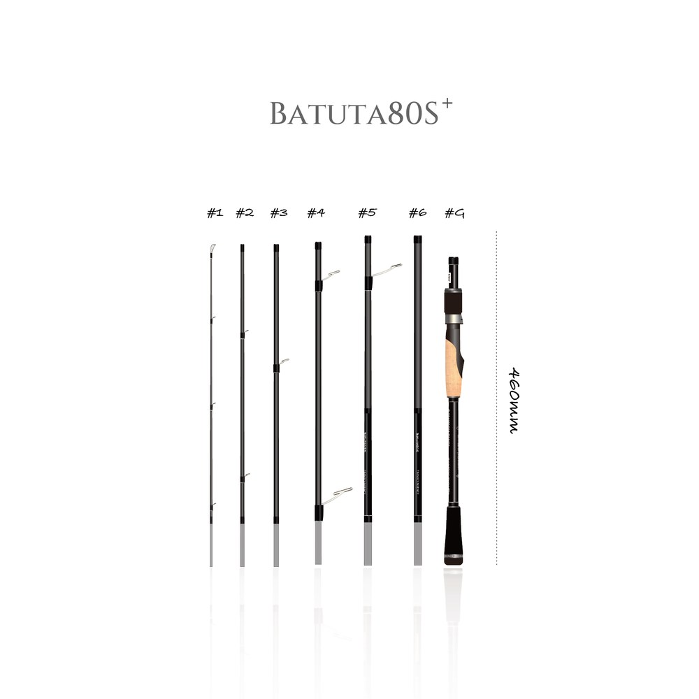
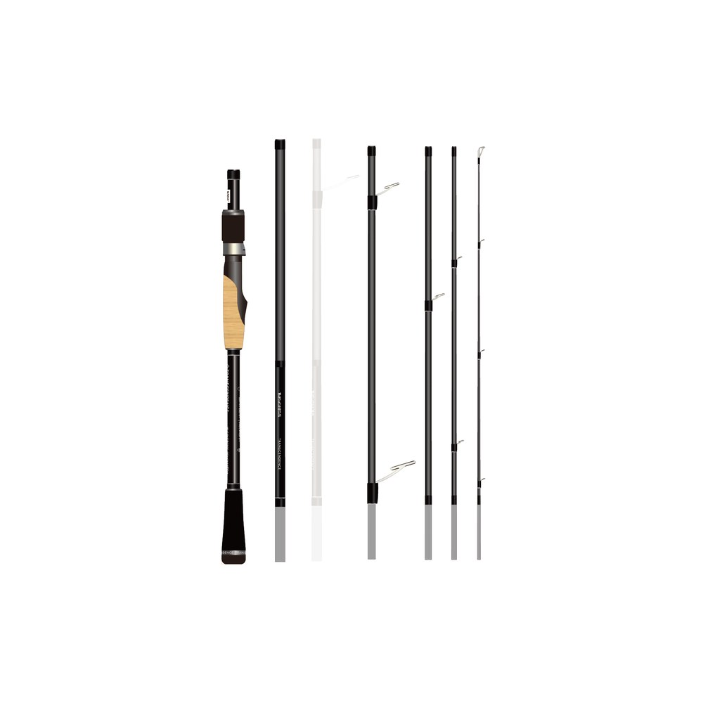
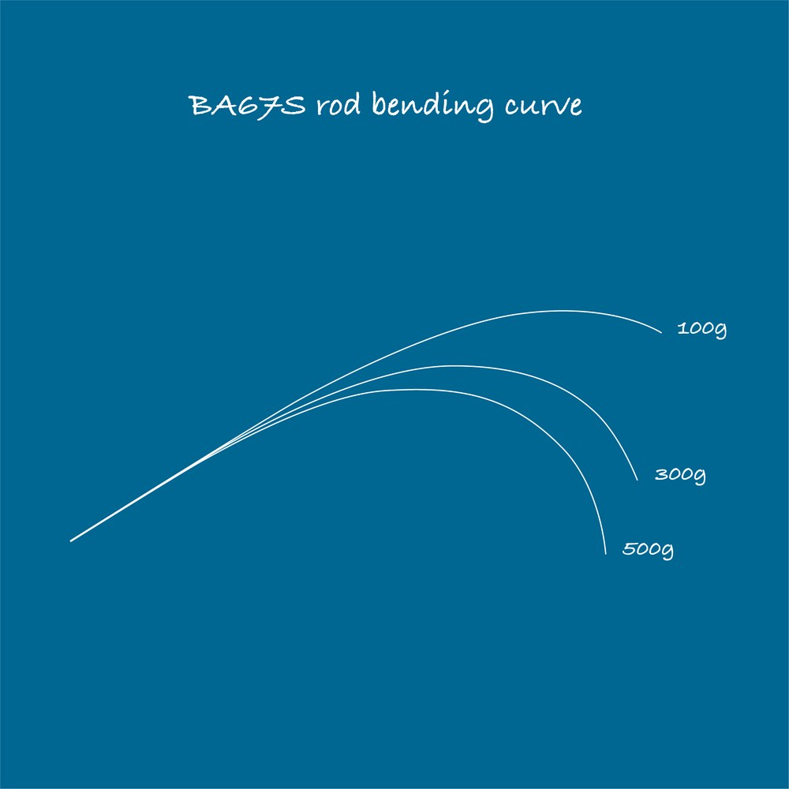
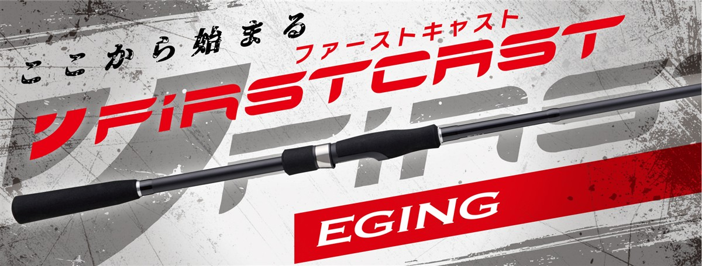

バトゥータ80S+
（Batuta80S+）
バトゥータ80S+は、パックロッド専門ブランドTRANSCENDENCE（トランスセンデンス）の、エギングとライトゲームのためのスピニングロッドです。
「エギングを本気で出来るマルチピースロッドが欲しい」という思いから開発された1本で、8.0ftと6.7ftに組み替えられる2in1。本気のエギングロッドとしての性能を持ちながら、仕舞寸法460mmで出張や旅行の鞄にも入るのが最大の特徴です。名前の「Batuta」は指揮棒の意味です。

画像出典:TRANSCENDENCE公式HP
スペック
- メーカー
- TRANSCENDENCE（トランスセンデンス）
- タイプ
- スピニングロッド（エギング・ライトゲーム・2in1可変レングス）
- 長さ
- 8.0ft／6.7ft
- 継数
- 8.0ftは6ピース、6.7ftは5ピース
- 仕舞寸法
- 460mm
- 自重
- 94〜109g
- ルアー重量
- 3〜21g
- PEライン
- 0.4〜1号
- ブランク
- 4軸カーボン
- ガイド
- トップはチタントルザイト、ほかはチタン・SiC複合
- グリップ
- 可変フレキシブルグリップ
- 開発
- Takato Yamada・Keisuke Doi
- ターゲット
- アオリイカ（エギング）・シーバス・チヌ・メバル・ロックフィッシュ・バスなど
- 価格
- 68,200円（税込）
▼今すぐチェック
バトゥータ80S+の特徴
エギングを本気で。どこへでも持って行けるライトゲームのスタンダード
-
ハリのあるティップと、しなやかなバット
繊細なティップと極端なファーストテーパーが主流の中で、あえてハリを残したティップのレギュラーテーパーを採用。竿全体を鞭のようにしならせるジャークが得意で、糸ふけ（スラック）を生かした丁寧な誘いができる。
-
潮の変化を感じ取れる
しなやかさを生かした設計で、シャクリやフォールのときにエギが受ける潮の抵抗の小さな変化が手元に伝わる。イカの活性が上がる、潮が動き出すタイミングを逃しにくい。
-
仕舞寸法460mmのコンパクトさ
偶数の6ピース設計で、仕舞寸法はトランスセンデンスの中でもトップクラスに短い460mm。釣りが目的でない出張や帰省、旅行の鞄の奥にもしまっておける。
8.0ftと6.7ftの使い分け
| 長さ | 組み合わせ | 得意な |
|---|---|---|
| 8.0ft | #1+#2+#3+#4+#6+グリップ |
メインの |
| 6.7ft | #1+#2+#3+#5+グリップ |
ボートや |
全部のピース（#1〜#6とグリップ）と、長さを変えるときの組み合わせです（薄い色のピースは、その長さでは使いません）。

画像出典:TRANSCENDENCE公式HP

画像出典:TRANSCENDENCE公式HP
100g・300g・500gの荷重をかけたときの、6.7ftの曲がり方です。

画像出典:TRANSCENDENCE公式HP
※TRANSCENDENCE公式HPの記載より。仕舞寸法はどちらも460mmです。
バトゥータ80S+の使い方
エギングでは、主に3.5号のエギを使うことを考えて作られています（2.5〜4.0号まで対応）。竿全体がしなやかに曲がるので、ロッド全体をしならせる大きめのシャクリで糸ふけを作り、エギを手前に寄せずに同じ場所でネチネチと誘い続けるのが得意です。
ティップに適度なハリがあるので、ボトムワインドや小型のミノーのトゥイッチ、トップウォーターのプラグなど、ルアーを動かす釣りにもそのまま使えます。
バトゥータ80S+がおすすめの人
エギングを中心に、シーバス・チヌ・メバルなどのライトゲームも1本でこなしたい人や、出張・旅行先で釣りをしたい人におすすめです。
どこへ行くにも鞄に入れておける、本気仕様のエギングロッドなので、不意に訪れた釣りのチャンスでもいつもと同じ感覚でアオリイカを狙えます。スローなテーパーで細いラインでも安心してやり取りできるので、どんなサイズのイカでも引きを楽しめます。
ワンポイント
ラインはPE0.5〜0.8号を基準にするのがおすすめです。竿全体の曲がりで魚の引きを吸収してくれるので、細めのPEでもドラグを締めすぎずにやり取りできます。細いラインは風や潮の影響を受けにくく、エギの姿勢も安定しやすくなります。
バトゥータ80S+に合わせたいリール
PE0.4〜1号・3〜21gのライトなロッドで、自重も94〜109gと軽いので、2500〜3000番クラスの軽いスピニングリールが合います。エギングならシャクりやすいハイギアも選択肢です。
| リール | 合わせたい |
|---|---|
| シマノ ヴァンキッシュ C3000番クラス |
軽さを |
| ダイワ エアリティ LT2500〜3000番クラス |
軽さと |
※最新のラインナップや番手は各メーカーの公式サイトで確認してください。
▼今すぐチェック
バトゥータ80S+とあわせてチェックしたいアイテム
-

NEWファーストキャスト エギングモデル メジャークラフト 詳細はこちら＞入門向けのエギングロッド。まずは手ごろな1本から始めたい人に。
-
 カレンテス82S+
TRANSCENDENCE
詳細はこちら＞
カレンテス82S+
TRANSCENDENCE
詳細はこちら＞
同じブランドのシーバス用パックロッド。もう少し重いルアーを投げるなら。
-
 ディアナクト 78L5
GOTO9
詳細はこちら＞
ディアナクト 78L5
GOTO9
詳細はこちら＞
5ピースのライトゲームパックロッド。シーバスアングラーのもう1本に。